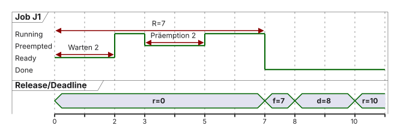
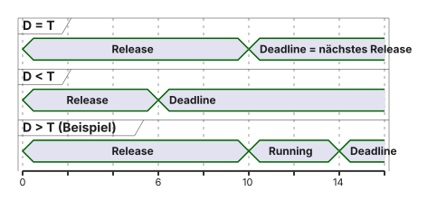
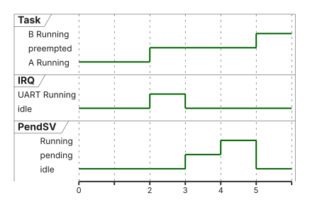
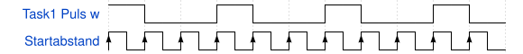

02 · Scheduling-Theorie
Task-Modelle, Utilization, RMS/EDF · EZS · DHBW Stuttgart
Prof. Dr.-Ing. Daniel Klünder
Willkommen zurück zu Echtzeitsystemen!
Herzlich willkommen zum 2. Termin
Letzte Woche: Rechtzeitigkeit, Cortex-M4, Interrupts, Bare-Metal
Heute: Task-Modell, Auslastung, RMS, RTA, EDF — ein Prozessor
Praxis: kooperativer Round-Robin als Dispatcher (kein Register-Port)
Der zweite Kern des H755 verdoppelt dieses Modell nicht automatisch
In Vorlesung 1 (VL1) der Echtzeitsysteme (EZS) an der Dualen Hochschule Baden-Württemberg (DHBW) Stuttgart hieß Rechtzeitigkeit: ein Ergebnis ist erst dann brauchbar, wenn es vor seiner Frist fertig ist. Release ist der Zeitpunkt, ab dem ein Job rechnen darf. Start ist der erste Moment, in dem die CPU ihn ausführt. Completion ist die Fertigstellung. Die relative Deadline ist die Frist ab Release, die absolute Deadline ein Zeitpunkt auf der Uhr. Jitter ist die Schwankung eines Zeitabstands, nicht schon jede konstante Verspätung.
Heute bleibt die Analyse bei genau einer CPU (Central Processing Unit, der Prozessor). Der Mikrocontroller STM32H755ZIT6 auf dem Board NUCLEO-H755ZI-Q hat zusätzlich einen Cortex-M7. Der zweite Kern verdoppelt die Formeln nicht, weil Busse und Speicher sich stören können. Diese Störung steckt nur dann in der WCET (Worst-Case Execution Time, obere Schranke der eigenen Ausführungszeit), wenn das Modell sie ausdrücklich enthält.
RMS (Rate Monotonic Scheduling) vergibt feste Prioritäten nach der Aktivierungsrate. RTA (Response-Time Analysis) rechnet die maximale Antwortzeit. EDF (Earliest Deadline First) wählt den bereiten Job mit der frühesten absoluten Deadline. Das Labor baut keinen Registerwechsel, sondern einen kooperativen Dispatcher: kurze Funktionen kehren zurück.
Welche Stationen verbinden dieses Ein-CPU-Modell mit dem späteren Laborcode?
Agenda für heute
Recap und Task-Modell (\(C\) , \(T\) , \(D\) , \(R\) )
Auslastung, WCET, Scheduling-Klassen
RMS-Schranke, Gantt, Response-Time Analysis
EDF am selben Zahlenbeispiel, Überlast
SysTick/PendSV und Labor-Dispatcher
Die Agenda ist eine Argumentationskette, keine Themenliste. Zuerst beschreiben wir eine wiederkehrende Aufgabe durch Bedarf, Periode und Frist. Danach fragen wir, welchen Anteil der CPU das langfristig ausmacht. Erst dann legen wir fest, welcher bereite Job die einzige CPU erhält, und prüfen, ob die Fristen halten. Am Ende sehen wir, wie ein Zeitgeber und ein aufgeschobener Wechsel einen Thread fortsetzen, und wie das Labor denselben Gedanken ohne eigenen Task-Stack vereinfacht.
Drei Zahlenbeispiele bleiben dieselben. 75 % zeigt Präemption. 85 % liegt über der einfachen Schranke und wird mit der Antwortzeitanalyse nachgewiesen. 97 % scheitert unter RMS und hält unter idealem EDF. Sie sind Lehrstücke, keine Messungen am Board.
Was sollen Sie am Ende selbst rechnen können?
Lernziele des heutigen Tages
Task, Job und \(C_i\) , \(T_i\) , \(D_i\) , \(R_i\) auf einer Zeitachse erklären
Auslastung \(U\) berechnen und von lokalen Fristen unterscheiden
Kooperativ/präemptiv und Fixed Priority/EDF als getrennte Achsen
Eine einfache RTA selbst rechnen und die EDF-Annahmen prüfen
Den Labor-Dispatcher ohne rekursive Tasks erklären
Nach dieser Vorlesung können Sie eine Aufgabe und ihre einzelnen Jobs auf einer Zeitachse benennen. \(C\) ist der eigene CPU-Bedarf, \(T\) der Abstand der Freigaben, \(D\) die relative Frist, \(R\) die Antwortzeit von der Freigabe bis zur Fertigstellung. Nachweis heißt \(R \le D\) unter genannten Annahmen, nicht „die CPU ist schnell“.
Sie trennen die langfristige Auslastung \(U\) von der Frage, ob ein kurzes Fenster die Frist hält. Kooperativ bedeutet freiwillige Rückgabe der CPU, präemptiv eine erzwungene Unterbrechung durch den Scheduler. Fixed Priority ist eine feste Rangfolge. EDF ist eine andere Regel. Ein Callback ist eine Funktion, die zurückkehrt. Ein RTOS-Thread kann mitten in seinem Code pausieren, weil Register und Stack gesichert werden.
Warum reicht eine Super-Loop nicht als allgemeine Lösung, obwohl sie bei kurzer Arbeit Fristen halten kann?
Recap: Polling vs. Interrupts
Begrenzte Super-Loop kann Fristen halten
Lange unzerlegte Arbeit sprengt das Budget
Interrupts verkürzen bestimmte Reaktionen
Maskierung, ISR-Zeit und Ressourcen bleiben
while ( 1 ) { (); /* z. B. 50 ms */ (); /* verpasst das Budget */ }
Polling heißt: die Schleife fragt selbst nach, ob etwas zu tun ist. Eine Super-Loop ist die Endlosschleife while (1), die ihre Arbeiten nacheinander aufruft. Im Beispiel dauert Sensor_Auswerten() 50 ms. Erst danach kommt LED_Blinken(). Liegt das LED-Budget darunter, ist die Schleife zu lang, nicht weil Polling grundsätzlich falsch wäre.
Ein Interrupt ist eine Hardwareanforderung (IRQ, Interrupt Request). Die Interrupt Service Routine (ISR) ist die kurze Behandlungsfunktion. Sie kann eine Reaktion vorziehen, verbraucht aber selbst Zeit. Ist die ISR maskiert, also gesperrt, bleibt die Anforderung liegen. Interrupts stellen deshalb keinen automatischen Determinismus her.
Wie wird die Main-Schleife unlesbar, wenn Sensor, Kommunikation und Aktor jeweils ein eigenes Merkbit setzen?
Recap: Die Spaghetti-Code-Falle
Viele Ereignisse: Flags in der Main-Loop
Prioritäten und Fristen werden schwer nachvollziehbar
Ein RTOS strukturiert Tasks — es beweist Fristen nicht von selbst
Ein Flag ist ein gespeichertes Merkmal: „Sensorwert da“, „Paket angekommen“, „Aktor darf stellen“. Jede ISR setzt ihr Flag, die Main-Schleife muss alle in der richtigen Ordnung abfragen. Bei drei Quellen sieht man die Reihenfolge noch. Bei zwanzig Flags ist nicht mehr offensichtlich, welche Frist zuerst verletzt wird.
Ein RTOS (Real-Time Operating System, Echtzeitbetriebssystem) kann daraus getrennte Aufgaben mit Zustand und Priorität machen. Es beweist die Fristen nicht von selbst. Die Worst-Case Execution Time bleibt eine Annahme der Analyse, kein automatischer Wächter im Betriebssystem.
Welchen Unterschied macht es, ob eine Aufgabe einen eigenen Stack hat oder nur eine Funktion ist, die zurückkehrt?
Der Paradigmenwechsel: Das Betriebssystem
Zeitmanagement kann ein RTOS übernehmen
RTOS-Thread: eigener Stack, Kontextwechsel
Labor heute: endliche Schritte, Rückkehr zum Dispatcher
Das sind unterschiedliche Kontextmodelle
Ein Kontext sind die Daten, mit denen die CPU später genau dort weiterrechnet: Register und der Stack, also der Stapelspeicher für Rücksprung und lokale Variablen. Ein RTOS-Thread besitzt davon eine eigene Sicherung. Wird er unterbrochen, bleibt sein Stand erhalten. Ein Labor-Callback ist eine kurze Funktion. Sie rechnet, schreibt ihren Fortschritt in Verwaltungsdaten und kehrt zurück. Es gibt keinen pausierten Befehlszähler mitten in ihrer Schleife.
FreeRTOS ist ein konkretes Echtzeitbetriebssystem. Die heutigen Callbacks sind nicht seine Threads. Ein Schleifendurchlauf wird erst ein modellierter Job, wenn Freigabe und Fertigstellung definiert sind.
Wer bekommt die einzige CPU, wenn mehrere solche Aufgaben gleichzeitig bereit sind?
Was ist Scheduling?
Ablaufplanung: wer erhält die CPU wann?
Heute: genau ein Prozessor
Echtzeit: spezifizierte Fristen, nicht pauschale Fairness
Fairness und Deadline-Einhaltung sind verschiedene Ziele
Scheduling, die Ablaufplanung, beantwortet: welcher bereite Job erhält die CPU. Ein Regler muss seine Stellgröße vor der nächsten Abtastung liefern. Eine Anzeige darf später kommen. Fristtreue und Fairness sind deshalb verschiedene Ziele. Fairness hieße, jeder kommt irgendwann dran. Eine harte Frist kann verlangen, dass die Anzeige wartet.
Heute gilt das Modell für eine CPU. Der zweite Kern des H755 ist eine zweite Ressource mit eigenen Wartezeiten an gemeinsamen Bussen. Die Formel \(U \le 1\) für eine CPU darf man nicht einfach verdoppeln.
Welche drei Zahlen braucht die Analyse, bevor irgendein Scheduler zur Laufzeit entscheidet?
Vom C-Code zum Modell
Analyse beschreibt den Entwurf: \(C\) , \(T\) , \(D\)
Ein Fixed-Priority-Scheduler zur Laufzeit kennt typisch Zustand und Priorität
Er leitet daraus keine Deadline-Garantie ab
FreeRTOS überwacht WCET/Deadline nicht automatisch
\(C\) , \(T\) , \(D\) , Nachweis \(R \le D\) Ready/Running/Blocked, konfigurierte Priorität
Aus einer C-Funktion wird ein Modell, indem wir drei Entwurfszahlen festlegen. \(C\) ist der eigene Rechenbedarf, \(T\) der Abstand der Freigaben, \(D\) die relative Frist. Die Analyse prüft damit \(R \le D\) . Zur Laufzeit sieht ein Fixed-Priority-Scheduler, ein Scheduler mit fester Priorität, vor allem den Zustand Ready, Running oder Blocked und die konfigurierte Prioritätszahl. Er kennt die bewiesene Antwortzeit nicht und überwacht bei FreeRTOS die Deadline nicht automatisch.
Die Garantie gilt deshalb nur unter den Annahmen der Rechnung, nicht für jedes Programm auf dem STM32, sobald Interrupts, gemeinsame Daten oder ein zweiter Kern fehlen.
Was ist der Unterschied zwischen der wiederkehrenden Aufgabe und einer einzelnen Aktivierung?
Definition: Was ist eine Task?
Task \(\tau_i\) : wiederkehrende Aufgabe
Job \(J_{i,k}\) : eine konkrete Aktivierung
RTOS-Thread: eigener Kontext (Register, Stack)
Labor-Callback: endlicher Schritt, Zustand im TCB, kein pausierter Stack
Die Task \(\tau_i\) (tau mit Index i) ist die wiederkehrende Aufgabe, zum Beispiel ein Regler, der alle 10 ms einen neuen Job bekommt. Der Job \(J_{i,k}\) ist die k-te Aktivierung. Ein RTOS-Thread hat eigene Register und einen eigenen Stack. Der Labor-Callback hat nur einen Funktionszeiger und den Zustand im TCB (Task Control Block, die Verwaltungsdaten). Seinen Fortschritt muss er selbst wegschreiben, bevor er zurückkehrt.
Ein Schleifendurchlauf ist nur dann dieser Job, wenn klar ist, wann er freigegeben wird und wann er fertig ist. Sonst vermischt man Programmstruktur und Zeitmodell.
Wie viel eigene CPU-Zeit setzen wir für einen solchen Job an?
Parameter einer Task: \(C_i\) (Ausführungszeit)
\(C_i\) : eigener CPU-Bedarf ohne UnterbrechungszeitIm harten Analysemodell: angenommene WCET
Warte- und Präemptionszeit zählen nicht zu \(C_i\)
Ohne dokumentierte Schranke kein Nachweis
\(C_i\) ist der eigene CPU-Bedarf des Jobs, ohne die Zeit, in der er nur wartet oder von jemand anderem unterbrochen wird. Im harten Modell setzen wir dafür eine WCET an, also eine obere Schranke unter genannten Annahmen. Drei Millisekunden eigene Arbeit können trotzdem erst nach sieben Millisekunden fertig sein, wenn zwei Millisekunden Warten und zwei Millisekunden Unterbrechung dazukommen.
Das größte Ergebnis aus ein paar Messläufen ist ein Messmaximum, keine Schranke für alle noch nicht gesehenen Pfade. Ein willkürlicher Puffer darauf ist eine Entwurfsentscheidung, kein Beweis.
Wie oft wird dieser Bedarf freigegeben?
Parameter einer Task: \(T_i\) (Periode)
\(T_i\) : Abstand der Releases , nicht der CPU-StartsBeispiel Regler: \(T_i = 10\,\mathrm{ms}\) (Lehrannahme)
Zunächst: kein Release-Jitter
\(T_i\) ist der Abstand der Releases, nicht der Abstand der CPU-Starts. Ein Regler mit \(T_i = 10\,\mathrm{ms}\) wird bei 0, 10, 20 ms freigegeben, auch wenn er erst bei 2, 13 und 21 ms zu rechnen beginnt. Der Sollzeitpunkt der Freigabe und der tatsächliche Start sind zwei Marken.
Release-Jitter wäre die Schwankung dieser Freigabezeitpunkte. In den Kernbeispielen heute ist er null. \(T\) und die relative Deadline \(D\) sind nur dann dieselbe Zahl, wenn das Modell \(D = T\) ausdrücklich setzt.
Bis wann muss der Job fertig sein, gemessen ab seiner Freigabe?
Parameter einer Task: \(D_i\) (Deadline)
Relative Deadline \(D_i\) : Frist ab Release
Absolute Deadline: \(d_{i,k} = r_{i,k} + D_i\)
Job-Antwortzeit: \(R_{i,k} = f_{i,k} - r_{i,k}\)
\(R_i\) : nachgewiesene Worst-Case-Antwortzeit; gefordert \(R_i \le D_i\) Completion zum Zeitpunkt \(d\) gilt als rechtzeitig
Wird ein Job bei \(r = 10\,\mathrm{ms}\) freigegeben und ist die relative Deadline \(D = 8\,\mathrm{ms}\) , liegt die absolute Deadline bei \(d = r + D = 18\,\mathrm{ms}\) . Die Antwortzeit eines Jobs ist \(R_{i,k} = f_{i,k} - r_{i,k}\) , also Fertigstellung minus Freigabe. \(R_i\) ist die nachgewiesene Worst-Case-Antwortzeit im Modell. Gefordert ist \(R_i \le D_i\) . Fertig genau bei \(d\) ist noch rechtzeitig.
\(R\) enthält Warten und Präemption, \(C\) nicht. \(C \le D\) ist nötig, aber nicht hinreichend, sobald andere Jobs dazwischenrechnen.
Die getrennten Zeitparameter sehen wir nun gemeinsam auf einer Zeitachse.
Das grafische Task-Modell
Lehrjob (ms): \(r=0\) , Start \(s=2\) , Ausführung \(2\) –\(3\) und \(5\) –\(7\) , Präemption \(3\) –\(5\) , \(f=7\) , \(D=8\) , \(T=10\) .
\(C = 3\) , Startwartezeit \(2\) , Unterbrechung \(2\) , \(R = 7 \le D\) Nächster Release bei \(t = 10\) , nicht beim CPU-Start

Ein Job, Zeiten in Millisekunden. Bei \(r = 0\) wird er freigegeben und wartet bis zum Start \(s = 2\) . Er rechnet von 2 bis 3, wird von 3 bis 5 unterbrochen und rechnet von 5 bis 7. Fertigstellung \(f = 7\) , relative Deadline \(D = 8\) , nächster Release bei \(T = 10\) . Die eigene CPU-Zeit ist \(1 + 2 = 3\,\mathrm{ms}\) . Die Antwortzeit ist \(R = 7 - 0 = 7\,\mathrm{ms}\) . Beide Laufstücke gehören demselben Job. Die Unterbrechung zählt nicht zu \(C\) . Im Lehrmodell rechnet er mit der angesetzten WCET, nicht mit einer Boardmessung.
\(T = 10\) ist nicht der Abstand der Starts. Die Starts lägen bei 2 und irgendwann nach 10. Muss \(D\) immer gleich \(T\) sein?
Deadline-Klassifizierung

Implicit: \(D = T\) ; constrained: \(D \le T\) (enthält implicit)
Arbitrary: \(D\) beliebig, auch \(D > T\) und überlappende Jobs — nicht „immer \(D > T\) “
Liu-Layland und der einfache EDF-Test heute: \(D = T\)
Implicit heißt \(D = T\) : fertig werden, bevor der eigene nächste Job freigegeben wird. Constrained heißt \(D \le T\) und enthält den Fall \(D = T\) . Arbitrary heißt, \(D\) darf beliebig sein, also auch kürzer oder länger als \(T\) . Die dritte Zeile mit \(D > T\) ist nur ein Beispiel dafür, nicht die Definition. Überlappende Jobs derselben Aufgabe sind dann möglich und brauchen eine andere Rechnung.
Liu-Layland und der einfache EDF-Test heute setzen \(D = T\) . Warum reicht \(U \le 1\) bei kürzerer Deadline nicht? Das zeigt die nächste Folie an einem konkreten Burst.
Task-Typen nach Auslöser
Periodisch: feste Release-Abstände \(T\)
Sporadisch: garantierter Mindestabstand, nicht „zufällig“
Aperiodischer Burst: ohne Lastgrenze keine pauschale Garantie für jeden Eingang
Begrenzen: Zulassung, Verwerfen, reserviertes Budget (Server-Theorie später)
Gegenprobe, synchron, eine CPU: zwei Tasks \(C=2\,\mathrm{ms}\) , \(T=10\,\mathrm{ms}\) , \(D=3\,\mathrm{ms}\) .
\(U = 40\,\%\) , aber \(4\,\mathrm{ms}\) Arbeit vor \(t = 3\,\mathrm{ms}\) — unabhängig vom Algorithmus unmöglich
Periodisch heißt fester Release-Abstand, zum Beispiel eine Sensorabfrage alle 10 ms. Sporadisch heißt: der Abstand ist mindestens \(T\) , aber nicht jeder Takt muss ein Job kommen. Ein Taster ohne Entprellung hat diese Garantie nicht. Die physikalische Betätigung und der modellierte Mindestabstand sind zweierlei. Ein Burst ohne Obergrenze erlaubt keine pauschale Frist für jedes Ereignis.
Die Gegenprobe: zwei Jobs, je \(C = 2\,\mathrm{ms}\) , \(T = 10\,\mathrm{ms}\) , \(D = 3\,\mathrm{ms}\) , beide bei \(t = 0\) frei. \(U = 2/10 + 2/10 = 0{,}4 = 40\,\%\) . Trotzdem liegen 4 ms Arbeit in einem Fenster von 3 ms. Das ist unmöglich, unabhängig vom Algorithmus. \(U \le 1\) ist bei \(D < T\) kein EDF-Test.
Welche dieser freigegebenen Jobs sind gerade ausführbar, und welcher Zustand beschreibt das?
Das RTOS Task-Zustandsmodell
Running: hat die CPU (eine Nutz-Task; Idle wenn keine Arbeit)
Ready: will rechnen
Blocked: wartet auf Ereignis oder Timeout, rechnet nicht
Blocked wird Ready; die Auswahl kann unmittelbar folgen
Interruptkontext ist kein vierter Task-Zustand
Running heißt: dieser Task-Kontext hat die CPU. Auf einer CPU ist das höchstens einer. Ready heißt: er will rechnen und wartet auf die Zuteilung. Blocked heißt: er wartet auf ein Ereignis oder eine Zeit und führt keine eigenen Befehle aus. Das ist nicht „er rechnet langsam“. Idle, der Leerlauf, darf laufen, wenn niemand Ready ist. Eine ISR ist kein vierter Task-Zustand, sondern Handler-Kontext.
Ein Sensorjob ist Running, solange er die Stellgröße rechnet. Die Kommunikationsaufgabe ist Blocked, bis das Byte da ist. Danach wird sie Ready, nicht sofort Running.
Welche Ereignisse verursachen diese Wechsel?
Metrik: CPU-Auslastung (\(U\) )
\[U = \sum_{i=1}^{n} \frac{C_i}{T_i}\]
Langfristiger Pflichtanteil auf einer CPU
\(U > 1\) : dauerhafte Pflichtlast nicht erfüllbarEndliche Bursts und eine zweite H755-CPU sind ein anderes Modell
Nicht zugewiesene Prozent sind kein Fristpuffer in jedem Fenster
Die Auslastung einer Aufgabe ist \(U_i = C_i / T_i\) . Beide Größen stehen hier in Millisekunden, der Quotient ist deshalb einheitenlos. \(0{,}25\) ist dasselbe wie 25 %. Die Summe \(U\) ist der langfristige Pflichtanteil auf einer CPU. Für unbegrenzte periodische Pflicht auf einer CPU ist \(U \le 1\) notwendig. Es ist nicht hinreichend, wenn die Deadline kürzer als die Periode ist: die 40-%-Gegenprobe brauchte 4 ms in 3 ms. Nicht vergebene Langfristkapazität ist nicht in jedem kurzen Fenster frei.
Wie sieht das an den drei Aufgaben mit 85 % aus?
Auslastung: Ein Rechenbeispiel
Durchgängiges 85-%-Set (ms), \(D_i = T_i\) :
\(\tau_1\) 1
4
25 %
\(\tau_2\) 2
5
40 %
\(\tau_3\) 2
10
20 %
\(U = 0{,}85\) ; restliche 15 %: nicht zugewiesen im LangfristmodellLokal kann die Nachfrage trotzdem eng sein (RTA gleich)
ISR-, Dispatcher- und Messoverhead getrennt bilanzieren, nicht doppelt und nicht als „Pauschalreserve = Beweis“
\(\tau_1\) : \(C = 1\,\mathrm{ms}\) , \(T = 4\,\mathrm{ms}\) , \(U_1 = 1/4 = 0{,}25 = 25\,\%\) . \(\tau_2\) : \(2/5 = 0{,}40 = 40\,\%\) . \(\tau_3\) : \(2/10 = 0{,}20 = 20\,\%\) . Summe \(U = 0{,}85 = 85\,\%\) . Die restlichen 15 % sind im Langfristmodell nicht zugewiesen. Sie sind keine Reserve in jedem 4-ms-Fenster. Interrupt- und Dispatcheraufwand darf nur einmal in die Bilanz: entweder in \(C\) oder als eigene Last, nicht doppelt. Die berechnete Auslastung ist nur so belastbar wie die angesetzten Ausführungszeiten. Deshalb prüfen wir nun, wie \(C\) zustande kommt.
Exkurs: Das Problem mit der WCET
if ( sensor_value > 1000 ) (); /* illustrative Laufzeit, z. B. länger */ else = 1 ; /* kurzer Pfad */
Eine Mittelwertannahme von \(1\,\mathrm{ms}\) braucht eine Pfadverteilung oder bleibt hypothetisch
Beobachtetes Maximum \(\neq\) sichere Obergrenze
Statische Analyse braucht Plattform- und Codeannahmen (Cache, Bus, Waitstates)
FFT heißt Fast Fourier Transform, eine schnelle Fourier-Transformation. Sie ist hier nur der rechenintensive Zweig: große Sensordaten brauchen lange, ein kleines Flag fast nichts. Der Mittelwert mischt beide Pfade. Das Messmaximum ist der längste beobachtete Lauf, keine Schranke für einen noch nicht genommenen Pfad. Cache, Buskonflikt und Wartezyklen auf den Speicher ändern die Dauer, auch wenn der Quelltext gleich bleibt. Interferenz des H755 gehört in die WCET oder wird als außerhalb des idealen Ein-CPU-Modells gekennzeichnet. Die Kurve ist Lehre, keine Boardmessung.
Wie kommt man zu einer belastbaren oberen Schranke?
Wie ermittelt man die WCET?
Statische Analyse
Pfade, Schleifengrenzen, Plattform
Sichere Schranke nur unter Annahmen
Messung
Messmaximum der Läufe
Kein Beweis durch „plus Puffer“
Annahmen dokumentieren
Die statische Analyse geht die Pfade des Programms durch und braucht Schleifengrenzen und ein Plattformmodell, sonst ist die Schranke nicht geschlossen. Die Messung liefert das Maximum der durchgeführten Läufe. Ein Zuschlag von 20 % kann eine Entwurfsentscheidung sein. Allein beweist er nicht, dass kein längerer Pfad existiert. Beide Wege brauchen dokumentierte Annahmen: Compiler, Takt, Speicher, Interrupts.
Das Modell beschreibt die Arbeit, legt aber noch nicht fest, welcher bereite Job zuerst rechnet. Vorher fassen wir Task, Job und die vier Zeiten zusammen.
Zusammenfassung Task-Modell
Task vs. Job; \(T\) = Release-Abstand
\(C\) eigener Bedarf; \(R = f - r\) ; Nachweis \(R \le D\) \(U\) auf einer CPU; \(U > 1\) schließt dauerhafte Pflichtlast ausAnalysezahlen \(\neq\) automatische RTOS-Überwachung
Ein Reglerjob mit \(C = 2\,\mathrm{ms}\) , \(T = 10\,\mathrm{ms}\) und \(D = 8\,\mathrm{ms}\) hat \(U_i = 0{,}2\) und die Forderung \(R \le 8\,\mathrm{ms}\) . Die Auslastung sagt den langfristigen Anteil, die Antwortzeit die Fertigstellung ab Release. Die Kontrollfrage: zwei solche Jobs mit \(D = 3\,\mathrm{ms}\) haben zusammen \(U = 40\,\%\) , brauchen aber 4 ms vor \(t = 3\,\mathrm{ms}\) . Die Frist ist unmöglich. Antwort: nein, die Auslastung genügt hier nicht.
Das Modell beschreibt die Arbeit, legt aber noch nicht fest, welcher bereite Job zuerst rechnet.
Die Kernfrage des Schedulings
Mehrere Ready, eine CPU
Der Algorithmus legt die Auswahlregel fest
Ob Fristen halten, zeigt der Test unter seinen Annahmen
Mehrere Jobs können Ready sein, die CPU ist eine. Ein Regler mit früher Frist und eine Anzeige mit später Frist dürfen nicht beide gleichzeitig rechnen. Die Auswahlregel legt die Reihenfolge fest. Der Test sagt danach, ob die Fristen unter den Annahmen halten. Regel und Beweis sind zwei Schritte. Wer sie vermischt, hält eine Prioritätszahl schon für einen Nachweis.
Wer trifft die Entscheidung, und wer setzt sie auf der CPU um?
Scheduler vs. Dispatcher
Scheduler: wer als Nächstes (Priorität, Deadline, Ring)
Dispatcher: setzt die Auswahl um
RTOS-Thread: Register/PSP; Labor: step() aufrufen und Rückkehr abwarten
Der Scheduler entscheidet, wer als Nächstes drankommt. Der Dispatcher führt diese Entscheidung aus. Bei zwei Jobs ist die Entscheidung „Regler vor Anzeige“ noch keine ausgeführte Stellgröße. Im RTOS sichert der Kontextwechsel Register und Stack. PendSV ist die aufschiebbare System-Exception, die diesen Wechsel im Cortex-M-Port ausführt, wenn sie pending, also angefordert, und danach aktiv wird. PSP (Process Stack Pointer) ist der Stackzeiger des Taskkontexts. Im Labor ruft der Dispatcher nur step() auf und bekommt die Kontrolle zurück. Es gibt keinen PendSV-Registerwechsel.
Welche Eigenschaften einer Auswahlregel lassen sich unabhängig voneinander kombinieren?
Klassifizierung: Offline vs. Online
Zeitpunkt der Planung
offline (Tabelle) / online (zur Laufzeit)
Auslöser
zeitgesteuert / ereignisgesteuert
CPU-Abgabe
kooperativ / präemptiv
Auswahl
Fixed Priority / EDF / RR
Die Achsen nicht gleichsetzen: online \(\neq\) automatisch ereignisgesteuert
Offline heißt: der Plan steht vor dem Lauf, oft als Tabelle. Online heißt: die Entscheidung fällt zur Laufzeit. Zeitgesteuert heißt: ein Takt löst den Schritt aus. Ereignisgesteuert heißt: eine Meldung oder IRQ löst ihn aus. Das sind verschiedene Achsen. Eine offline Tabelle kann zeitgesteuert sein. Ein Fixed-Priority-RTOS kann auf ein Ereignis reagieren und muss nicht auf den nächsten Tick warten. Kooperativ und präemptiv sagen nur, wie die CPU abgegeben wird. Fixed Priority und EDF sagen, nach welcher Regel gewählt wird.
Zwei zulässige Kombinationen: zeitgesteuerte Tabelle ohne Laufzeitauswahl, und online, ereignisgesteuert, präemptiv, feste Priorität. Online ist nicht automatisch präemptiv.
Wie gibt eine Aufgabe die CPU ab, wenn sie selbst noch Code hätte?
Klassifizierung: Kooperativ vs. Präemptiv
Kooperativ: Task gibt die CPU frei (yield / Rückkehr)
Präemptiv: der Kern entzieht die CPU
Fixed Priority ist nicht automatisch RMS: Prioritäten muss die Anwendung passend setzen
Round-Robin ignoriert Fristen, kann sie aber unter nachgewiesenen Bedingungen erfüllen
Kooperativ: die laufende Arbeit gibt die CPU frei, durch Rückkehr oder Yield, die freiwillige Abgabe. Präemptiv: der Scheduler entzieht sie. Ein kooperativer Dispatcher kann trotzdem von einer ISR unterbrochen werden. Das ist eine Interrupt-Unterbrechung, kein präemptiver Wechsel zwischen den Callbacks. Die Prioritätsregel und die Art der Abgabe sind getrennte Entscheidungen. Fixed Priority wird nur dann zu RMS, wenn die Prioritäten nach der Periode vergeben sind.
Wie sieht ein kooperativer Schritt aus, der eine Aktorfrist nicht mitten in der Arbeit zerreißt?
Kooperatives Scheduling (Non-preemptive)
Ein Schritt, der nie zurückkehrt, hält den Dispatcher an
Aktive IRQs können weiterlaufen
Calculate_PID und Apply_PWM im Beispiel als ein begrenzter Schritt, wenn die Aktorfrist das verlangtyield dazwischen nicht unkommentiert einbauen
PID ist ein Regler mit proportionalem, integralem und differenziellem Anteil. PWM, Pulse-Width Modulation, ist die Pulsweitenmodulation, mit der ein Aktor gestellt wird. Liegt die Aktorfrist über beiden Teilen, gehören Calculate_PID und Apply_PWM in denselben begrenzten Schritt. Ein Yield dazwischen würde die Stellung unnötig verzögern. Kooperativ kann Fristen erfüllen, wenn jeder Schritt ein Budget hat und zurückkehrt. Kehrt er nicht zurück, kommen die anderen Callbacks nicht dran. Interrupts können weiterlaufen.
Wie sieht die Alternative aus, wenn der Scheduler die CPU auch ohne Rückkehr entziehen darf?
Präemptives Scheduling
Eine ISR kann eine höherpriore Task Ready machen
PendSV kann nach ISR-Ende wechseln — nicht erst beim nächsten Tick
Präemption verhindert keinen Starvation, wenn High ständig Ready bleibt
Shared Data: später Mutex; Shared Memory ist nicht pauschal verboten, Abhängigkeiten müssen im Modell stehen
Low rechnet. Eine UART-ISR, die Interruptroutine der seriellen Schnittstelle, macht High Ready. Sie fordert PendSV an. Pending heißt angefordert, noch nicht laufend. Wenn die ISR endet und keine höhere Exception mehr aktiv ist, wechselt PendSV zu High. Das muss nicht der nächste SysTick sein. Der Satz „alle Wechsel passieren am Tick“ ist für diesen Weg falsch.
Yield ist freiwillige Abgabe. Bleibt High dabei Ready, wählt eine strikte Priorität sofort wieder High. Low hungert. Antwort auf die Frage: weil Ready-bleiben die Auswahl nicht ändert. Geteilte Daten brauchen später einen Schutz. Das ist nicht dasselbe wie die Unterbrechung selbst.
Wie unterscheidet sich die Dringlichkeit einer Task von der einer IRQ?
Prioritätsbasiertes Scheduling
Fixed Priority: konfigurierte Priorität, statisch im RMS-Modell
EDF: unter bereiten Jobs die früheste absolute Job-Deadline
Eine Deadline wird nicht allein dadurch „höher“, dass Zeit verstreicht, während andere absolute Deadlines fest bleiben
NVIC-IRQ: kleinere Zahl = dringender; native FreeRTOS-Taskpriorität: größere Zahl = höher (CMSIS-RTOS2 separat prüfen)
Fixed Priority vergibt eine feste Task-Rangfolge. EDF vergleicht absolute Job-Deadlines, nicht die relative Frist \(D\) allein. Beim NVIC (Nested Vectored Interrupt Controller) bedeutet die kleinere Zahl die dringendere IRQ. Bei nativen FreeRTOS-Taskprioritäten bedeutet die größere Zahl die dringendere Task. CMSIS-RTOS2 bildet seine Symbole darauf ab. Die Skalen darf man nicht übereinanderlegen.
Wenn mehrere Tasks dieselbe Rangstufe haben, braucht es eine zusätzliche Regel für die Reihenfolge untereinander.
Der Spezialfall: Round-Robin (RR)
Gleiche Auswahlklasse, ringförmige Zeitscheiben oder kooperative Schritte
Timer-RR: gleiche Quanten; Labor-RR: keine erzwungenen 1-ms-Quanten
Fairness ersetzt keinen Fristnachweis
Round Robin (RR) ist die zyklische Auswahl. Ein Zeitquantum ist die Scheibe, nach der der laufende Job bei gleicher Stufe weichen muss. Timerpräemptives RR erzwingt gleiche Scheiben. Das Labor später ruft unterschiedlich lange Schritte auf und erzwingt keine 1-ms-Quanten. RR ignoriert Fristen. Es kann sie nur erfüllen, wenn ein eigener Nachweis das zeigt. Allein die Ringordnung ist kein Fristbeweis.
Wie sieht eine Runde mit drei gleichen Scheiben auf einer CPU aus?
Das Problem des Aushungerns (Starvation)
Strikte Priorität, High bleibt Ready (auch nach yield): Low kommt nicht dran
yield behebt das nicht, solange High sofort wieder gewählt wirdAbhilfe: Blockieren, periodische Freigabe, geprüfte Budgets
Kooperativ zusätzlich: ein Schritt ohne Rückkehr stoppt die anderen Callbacks
Starvation, das Aushungern, heißt: eine Aufgabe bleibt Ready und erhält dennoch keine CPU, weil immer jemand Dringenderes bereit ist. High und Low sind beide Ready. High macht Yield und bleibt Ready. Die feste Priorität wählt wieder High. Low hungert. Blockieren nimmt High aus der bereiten Menge, Yield nicht. Präemption garantiert weder Fairness noch eine jitterfreie Periode. Jitter wäre die Schwankung der Abstände, nicht schon die Tatsache, dass Low wartet.
Wie unterscheidet man „kein Algorithmus kann das“ von „dieser Algorithmus kann das nicht“?
Wann ist ein System schedulbar?
Feasibility: es existiert irgendein zulässiger PlanSchedulability: ein gewählter Algorithmus hält die FristenEin RMS-Test kann RMS verwerfen, obwohl EDF funktioniert (97-%-Beispiel)
Tests gelten unter ihren Annahmen, nicht für jedes STM32-Programm
Feasibility heißt: es gibt irgendeinen zulässigen Plan. Schedulability heißt: der gewählte Algorithmus hält die Fristen. Die 40-%-Gegenprobe ist infeasible, also für jeden Algorithmus unmöglich, weil 4 ms Arbeit in 3 ms nicht passen. Das 97-%-Set ist anders: unter RMS scheitert es, unter idealem EDF nicht. Es ist also machbar, aber nicht mit jeder Regel. „Nicht RMS“ ist nicht dasselbe wie „unmöglich“.
Wie führt man einen solchen Nachweis, ohne jeden denkbaren Plan aufzuzeichnen?
Schedulability-Tests
Hinreichend: bestanden \(\Rightarrow\) nachgewiesen; nicht bestanden \(\Rightarrow\) keine Entscheidung
Exakt im benannten Modell: bestanden oder widerlegt
Die einfache RTA ist dieser Fixpunkt-Test, nicht pauschal „NP-schwer“
Allgemeine Scheduling-Probleme können schwer sein — das hier benannte Verfahren nicht damit abtun
Hinreichend heißt: besteht der Test, ist das Set im Modell nachgewiesen. Fällt er durch, ist die Frage offen. Notwendig heißt: fällt er durch, ist das Set widerlegt. Exakt heißt beides, aber nur in dem Modell, für das der Test bewiesen ist. Die Liu-Layland-Schranke ist hinreichend. Darüber kommt die Response-Time Analysis, die Antwortzeitanalyse, als konkrete Iteration, nicht der pauschale Satz, exakte Tests seien unberechenbar. Ein Fixpunkt ist ein Wert, den die Wiederholung nicht mehr ändert.
Zuerst wählen wir eine einfache feste Prioritätsregel. Anschließend prüfen wir, wann sie Fristen garantiert.
Rate Monotonic Scheduling (RMS)
Fixed Priority, präemptiv, Rate: kürzeres \(T\) \(\Rightarrow\) höhere Priorität
Liu & Layland (1973), für das ideale Ein-CPU-Modell
Ein FP-RTOS ist nicht automatisch RMS, solange die Prioritäten nicht so vergeben sind
RMS heißt Rate Monotonic Scheduling. Die Rate ist \(1/T\) . Je kürzer die Periode, desto höher die Aktivierungsrate und in RMS die feste Priorität. Ein Fixed-Priority-Kernel wird erst dann zu RMS, wenn die Prioritäten so vergeben sind. Eine Bremsenaufgabe ist nicht automatisch RMS, nur weil sie wichtig ist. RMS ist die Regel plus der Nachweis unter ihren Annahmen, keine Branchenzuordnung.
Unter welchen Voraussetzungen gilt der klassische Auslastungstest überhaupt?
RMS: Die mathematischen Annahmen
Für die Kernbeispiele, sofern nicht anders gesagt:
Ein Prozessor, vollständig präemptierbar, unabhängig
Beschränkte \(C_i\) , kein Blocking, kein Release-Jitter, keine Selbstsuspendierung
Zunächst Overhead/ISRs = 0 (sonst in \(C\) oder als Interferenz modellieren)
Liu-Layland und einfacher EDF-Test: \(D_i = T_i\)
Einfache RTA: Fixed Priority mit \(D_i \le T_i\)
Shared Memory ist erlaubt, wenn Abhängigkeiten und Interferenz im Modell stehen
H755-Businterferenz: im WCET oder außerhalb dieses Idealmodells
Eine CPU, vollständige Präemption und Unabhängigkeit heißen: Jobs stören sich nur, indem sie sich die CPU wegnehmen. Blocking wäre Warten auf eine Sperre. Release-Jitter wäre schwankende Freigabe. Selbstsuspendierung ist eine freiwillige Pause mitten im Job. Zunächst setzen wir den Overhead, also Zusatzaufwand von Tick und Wechsel, auf null. Die Liu-Layland-Schranke und der einfache EDF-Test brauchen \(D = T\) . Die einfache RTA erlaubt \(D \le T\) bei festen Prioritäten. Geteilter Speicher ist nicht verboten. Er muss als Störung im Modell stehen, sonst gilt der Nachweis nicht dafür.
Wie vergeben wir die Prioritäten im 75-%-Beispiel?
Beispiel 1: RMS-Prioritäten vergeben
75-%-Set (ms), \(D = T\) , Release aller ersten Jobs bei \(t = 0\) :
\(\tau_1=(1,4)\) , \(\tau_2=(2,6)\) , \(\tau_3=(2,12)\) \(U = \tfrac{1}{4}+\tfrac{2}{6}+\tfrac{2}{12} = 0{,}75\) Priorität \(\tau_1 > \tau_2 > \tau_3\)
\(U = 1/4 + 2/6 + 2/12 = 0{,}25 + 0{,}333\ldots + 0{,}166\ldots = 0{,}75 = 75\,\%\) . Die Perioden sind 4, 6 und 12 ms, also Priorität \(\tau_1 > \tau_2 > \tau_3\) . Alle ersten Jobs sind bei \(t = 0\) Ready. Sie starten nicht gleichzeitig: eine CPU führt nur einen aus. Das Set ist dazu da, die Präemption von \(\tau_3\) bei \(t = 4\,\mathrm{ms}\) zu zeigen.
Welche Intervalle ergeben sich bis 12 ms?
Der kritische Moment (Critical Instant)
Für dieses FP-Modell: Release zusammen mit allen höherprioren Aufgaben
„Hält hier, hält im Modell“ — nicht für Jitter, Blocking oder Selbstsuspendierung
Angepasste Analysen, wenn die Annahmen fallen
Der Critical Instant, der kritische Freigabezeitpunkt, ist hier der gemeinsame Release mit allen höherprioren Aufgaben. Dadurch ist die Störung am größten, solange niemand blockiert, niemand sich selbst aussetzt und die Freigaben nicht zittern. Ein gemeinsamer Release ist kein gemeinsamer Start. Für das 75-%-Set liefert die Antwortzeitanalyse \(R = (1, 3, 6)\,\mathrm{ms}\) . Für \(\tau_3\) läuft die Iteration \(2 \to 5 \to 6 \to 6\) . Hält die Aufgabe diesen Fall, hält sie im genannten Modell auch die anderen. Andere Modelle brauchen eine angepasste Analyse.
Gibt es einen einfacheren Test, der nicht jede Antwortzeit einzeln rechnet?
Die RMS-Schranke (Liu & Layland, 1973)
\[U \le U_{LL}(n) = n\bigl(2^{1/n}-1\bigr)\]
1
100 %
2
82,84 %
3
77,98 %
4
75,68 %
\(\infty\) \(\ln 2 \approx 69{,}31\,\%\)
Hinreichend unter den LL-Annahmen, nicht notwendig
69,3 % ist keine allgemeine RMS-Obergrenze
\(n\) ist die Anzahl der Aufgaben. \(U_{LL}(n) = n(2^{1/n}-1)\) ist eine hinreichende Schranke: liegt \(U\) darunter, ist das Set unter den Liu-Layland-Annahmen mit RMS nachgewiesen. Für \(n = 3\) ist \(2^{1/3} \approx 1{,}25992\) , mal 3 minus 3 ergibt etwa \(0{,}7798\) , also 77,98 %. \(\ln 2 \approx 0{,}693\) ist der natürliche Logarithmus von 2 und der Grenzwert für sehr großes \(n\) , keine Obergrenze für jedes Set.
Gegenprobe: \((C,T,D) = (2,4,4)\) und \((4,8,8)\) . \(U = 2/4 + 4/8 = 1\) . Ablauf 0–2 \(\tau_1\) , 2–4 \(\tau_2\) , 4–6 \(\tau_1\) , 6–8 \(\tau_2\) . Beide Fristen halten. 69,3 % ist also nicht das Maximum, das RMS tragen kann.
Wie liest man die drei Bereiche für \(n = 3\) ?
Werte der RMS-Schranke
Für \(n = 3\) :
bis 77,98 %: unter den Modellannahmen durch die Schranke nachgewiesen
darüber bis 100 %: genauer testen (RTA)
über 100 %: dauerhafte Pflichtlast auf einer CPU nicht erfüllbar
75-%-Set liegt im ersten Bereich; 85-%-Set braucht RTA
„Schranke nicht erfüllt“ \(\neq\) „nicht schedulbar“
Für drei Aufgaben: unter etwa 77,98 % ist das Set durch die Schranke nachgewiesen. Zwischen dieser Zahl und 100 % sagt die Schranke nichts. Darüber ist dauerhafte Pflichtlast auf einer CPU unmöglich. Das ist keine Messunsicherheit. Das 75-%-Set liegt im ersten Bereich. Das 85-%-Set liegt im zweiten und braucht die Antwortzeitanalyse. „Schranke nicht erfüllt“ heißt nicht „nicht einplanbar“.
Wie wendet man das auf die Frage an, ob 85 % schon scheitert?
Interpretation der RMS-Schranke
Die Schranke ist eine Entscheidungshilfe, kein vollständiger RMS-Test
FP-Prioritäten im RTOS müssen zur Rate passen, sonst ist es nicht RMS
Overhead nicht stillschweigend ignorieren, wenn er die Annahmen verletzt
\(U = 85\,\%\) liegt über \(U_{LL}(3) \approx 77{,}98\,\%\) . Die Schranke weist das Set nicht nach und widerlegt es auch nicht. Ein anderes Set mit derselben Summe kann anders ausgehen, weil die einzelnen Perioden die Störung ändern. Deshalb ist 85 % keine allgemeine RMS-Grenze. Die Auslastungsschranke liefert für unser 85-%-Set keine Entscheidung. Wir bestimmen deshalb die maximale Antwortzeit jeder Aufgabe.
Response-Time Analysis (RTA)
Einfaches FP-Modell, \(D_i \le T_i\) , \(hp(i)\) = höherpriore Tasks:
\[R_i^{(0)} = C_i, \qquad R_i^{(k+1)} = C_i + \sum_{j \in hp(i)} \left\lceil \frac{R_i^{(k)}}{T_j} \right\rceil C_j\]
Aufrundung: Anzahl störender Jobs im Fenster
Stopp bei Fixpunkt oder bei \(R > D\) ; \(R = D\) besteht
Exakt nur in diesem Modell; kein stiller Blocking-/Jitter-Term
85-%-Set, RMS-Prioritäten:
\(\tau_1\) : \(1 \to 1\) , \(R_1 = 1 \le 4\) \(\tau_2\) : \(2 \to 3 \to 3\) , \(R_2 = 3 \le 5\)
Die Auslastungsschranke hat für 85 % keine Entscheidung geliefert. Die Response-Time Analysis (RTA, Antwortzeitanalyse) bestimmt, wie lange ein Job unter festen Prioritäten maximal von der Freigabe bis zur Fertigstellung braucht. \(hp(i)\) ist die Menge der höherprioren Aufgaben. Wir starten mit \(R_i^{(0)} = C_i\) . \(\lceil R/T_j \rceil\) zählt, wie viele Jobs von \(j\) in das Fenster fallen. Aufrunden heißt: \(\lceil 2/4 \rceil = 1\) , \(\lceil 5/4 \rceil = 2\) . Jeder solche Job kostet bis zu \(C_j\) Millisekunden. Das neue Fenster kann weitere Jobs enthalten, deshalb wiederholen wir. Ein Fixpunkt ist der Wert, der sich nicht mehr ändert. Ein Job, der genau am rechten Ende fertig ist, wird von einer Freigabe zu diesem Zeitpunkt nicht mehr verzögert.
Für \(\tau_2\) ist \(C = 2\) , Störer \(\tau_1\) mit \(C = 1\) , \(T = 4\) . \(2 + \lceil 2/4 \rceil \cdot 1 = 3\) , dann \(2 + \lceil 3/4 \rceil \cdot 1 = 3\) . Fixpunkt \(R_2 = 3 \le 5\) . \(\tau_1\) hat keinen Störer, \(R_1 = 1 \le 4\) . Die nächste Folie rechnet \(\tau_3\) mit zwei Störern.
RTA für das 85-%-Set
\(\tau_3\) , \(C_3 = 2\) , \(hp = \{\tau_1,\tau_2\}\) :
0
\(C_3\) 2
1
\(2+\lceil 2/4\rceil\cdot 1+\lceil 2/5\rceil\cdot 2\) 5
2
\(2+\lceil 5/4\rceil\cdot 1+\lceil 5/5\rceil\cdot 2\) 6
3
\(2+\lceil 6/4\rceil\cdot 1+\lceil 6/5\rceil\cdot 2\) 8
4
\(2+\lceil 8/4\rceil\cdot 1+\lceil 8/5\rceil\cdot 2\) 8
Fixpunkt \(R_3 = 8 \le 10\)
Kritischer Ablauf: \(0\) –\(1\) \(\tau_1\) , \(1\) –\(3\) \(\tau_2\) , \(3\) –\(4\) \(\tau_3\) , \(4\) –\(5\) \(\tau_1\) , \(5\) –\(7\) \(\tau_2\) , \(7\) –\(8\) \(\tau_3\)
85 % liegen über \(U_{LL}(3)\) , dieses Set ist unter RMS dennoch nachgewiesen
Daraus folgt nicht „85 % ist immer sicher“
\(\tau_3\) startet bei \(R = 2\) . Mit \(\tau_1\) (\(T=4\) , \(C=1\) ) und \(\tau_2\) (\(T=5\) , \(C=2\) ): \(2 + \lceil 2/4 \rceil\cdot 1 + \lceil 2/5 \rceil\cdot 2 = 2+1+2 = 5\) . Dann \(\lceil 5/4 \rceil = 2\) und \(\lceil 5/5 \rceil = 1\) , also \(2+2+2 = 6\) . Dann \(\lceil 6/4 \rceil = 2\) und \(\lceil 6/5 \rceil = 2\) , also \(2+2+4 = 8\) . Nochmal: \(\lceil 8/4 \rceil = 2\) , \(\lceil 8/5 \rceil = 2\) , wieder 8. Fixpunkt \(R_3 = 8 \le 10\) . Der konkrete Nachweis gelingt. Die Releases bei 4 ms und 5 ms erklären, warum das Fenster wächst. Ablauf: 0–1 \(\tau_1\) , 1–3 \(\tau_2\) , 3–4 \(\tau_3\) , 4–5 \(\tau_1\) , 5–7 \(\tau_2\) , 7–8 \(\tau_3\) . Daraus folgt nicht, dass 85 % immer sicher wäre. Jetzt betrachten wir, welche Eigenschaften feste Prioritäten im praktischen Entwurf bieten.
Fazit: RMS in der Praxis
Feste Prioritäten: geringer Laufzeitaufwand, Analyse vorab
Überlast: eine für sich nachgewiesene höherpriore Teilmenge wird im unabhängigen präemptiven Modell nicht durch zusätzliche Low-Prio-CPU-Arbeit verdrängt
Das ist keine Garantie „nur Low-Prio verpasst Fristen“
Höchstpriore kann die eigene Frist verfehlen (Budget, Maskierung, Sperren)
Feste Prioritäten lassen sich vorab prüfen, und die Auswahl zur Laufzeit ist nur ein Vergleich der Prioritätszahl. Im unabhängigen präemptiven Modell verdrängt zusätzliche Low-Prio-Rechenarbeit eine bereits nachgewiesene höhere Teilmenge nicht. Das ist kein Schutz, wenn die hohe Aufgabe ihr eigenes Budget reißt oder blockiert. Das Gegenbeispiel \(C = 5\,\mathrm{ms}\) , \(T = D = 4\,\mathrm{ms}\) scheitert allein, ohne jede andere Aufgabe. Eine andere Auswahlregel kann eine längere Periode trotzdem früher berücksichtigen, wenn ihre absolute Jobdeadline früher liegt.
Earliest Deadline First (EDF)
Unter den bereiten Jobs: früheste absolute Deadline
Ereignisgesteuert; geeignete Datenstruktur, nicht „jede ms komplett neu sortieren“ als Definition
Nicht auf Soft Real-Time beschränkt
Linux SCHED_DEADLINE: EDF mit CBS und Zulassungskontrolle — nicht ungeschütztes Lehrbuch-EDF
EDF heißt Earliest Deadline First: unter den bereiten Jobs gewinnt die früheste absolute Deadline \(d = r + D\) . Die Regel ist ereignisgesteuert. Sie sortiert nicht bei jedem Tick die ganze Liste neu, nur weil Zeit vergeht. Bei Gleichstand bleibt heute die laufende Aufgabe. Linux SCHED_DEADLINE nutzt EDF zusammen mit CBS (Constant Bandwidth Server, ein Budget zur Isolation) und einer Zulassungskontrolle. Das ist nicht das ungeschützte Lehrbuch-EDF. EDF ist nicht auf weiche Fristen beschränkt.
Wann ist \(U \le 1\) wirklich der genaue Test?
Die mathematische Eleganz von EDF
Für unabhängige, präemptive Tasks auf einer CPU mit \(D_i = T_i\) , ohne Overhead:
\[U \le 1 \quad \text{genau dann schedulbar unter EDF}\]
Gilt nicht für \(D < T\) (40-%-Gegenprobe)
Gilt nicht automatisch auf dem H755 mit zweitem Kern oder unmodellierter Interferenz
Notwendig und hinreichend heißt: unter den Voraussetzungen gilt \(U \le 1\) genau dann, wenn EDF alle Fristen hält. Die Voraussetzungen sind eine CPU, \(D = T\) , unabhängige präemptive Jobs und kein Overhead. Die 40-%-Gegenprobe mit \(D = 3\,\mathrm{ms}\) zeigt die Grenze: \(U \le 1\) ist dort kein Test. Ein zweiter Kern oder unmodellierte Busstörung fällt ebenfalls heraus.
Wie entscheidet EDF das 97-%-Set im Vergleich zu RMS?
EDF: Entscheidungen bis \(t = 12\)
0
\(d(\tau_1)=5 < d(\tau_2)=7\) → \(\tau_1\)
2
\(\tau_1\) fertig → \(\tau_2\) (\(d=7\) )
5
\(\tau_2\) läuft, \(d=7 < 10\) → bleibt
6
\(\tau_2/J_1\) fertig → \(\tau_1/J_2\) (\(d=10\) )
7
\(\tau_2/J_2\) kommt, \(d=14 > 10\) → \(\tau_1\) bleibt
8
\(\tau_1\) fertig → \(\tau_2/J_2\)
10
\(\tau_1/J_3\) , \(d=15 > 14\) → \(\tau_2\) bleibt
12
\(\tau_2\) fertig → \(\tau_1/J_3\) bis 14
Hyperperiode 35 (Notizen): \(14\) –\(15\) \(\tau_2/J_3\) , \(15\) –\(17\) \(\tau_1/J_4\) , \(17\) –\(20\) \(\tau_2/J_3\) , \(20\) –\(22\) \(\tau_1/J_5\) , \(22\) –\(26\) \(\tau_2/J_4\) , \(26\) –\(28\) \(\tau_1/J_6\) , \(28\) –\(32\) \(\tau_2/J_5\) , \(32\) –\(34\) \(\tau_1/J_7\) , \(34\) –\(35\) Idle.
Bei \(t = 0\) ist \(d(\tau_1) = 5\) früher als \(d(\tau_2) = 7\) . Bei \(t = 2\) ist \(\tau_1\) fertig. Bei \(t = 5\) bleibt \(\tau_2\) , weil 7 vor 10 liegt. Bei \(t = 6\) ist dieser \(\tau_2\) -Job fertig, \(\tau_1/J_2\) hat \(d = 10\) . Bei \(t = 7\) kommt \(\tau_2/J_2\) mit \(d = 14\) und wartet. Bei \(t = 8\) ist \(\tau_1\) fertig. Bei \(t = 10\) hat der neue \(\tau_1\) \(d = 15\) , der laufende \(\tau_2\) \(d = 14\) . Bei \(t = 12\) übernimmt \(\tau_1\) bis 14. Die Hyperperiode ist das kleinste gemeinsame Vielfache \(\mathrm{lcm}(5,7) = 35\,\mathrm{ms}\) . Der weitere Plan mit der Regel „laufende Aufgabe bei gleichem \(d\) “ steht in der Folie, inklusive Idle 34–35. Die Tabelle illustriert. Der Nachweis für \(D = T\) bleibt \(U \le 1\) . Was ändert sich, wenn die Last das Modell verlässt?
Der Haken an EDF: Überlast
EDF ist deterministisch unter festen Regeln, nicht „chaotisch“
Überlast kann weitere Misses verursachen — abhängig von Set und Miss-Behandlung
Höchstpriore \(H\) : tatsächlicher Bedarf \(5\,\mathrm{ms}\) , \(T = D = 4\,\mathrm{ms}\) verfehlt die Frist allein
Geplanten \(C\) und überschrittenen Bedarf getrennt benennen
Strategien: verspäteten Job beenden, verwerfen oder Budget begrenzen — jede ändert das Verhalten
Feste absolute Deadline-Marker bleiben; ein überfälliger Job wird nicht automatisch „wichtiger“ nur weil die Uhr läuft, solange seine absolute Deadline fest ist und die Regel „früheste \(d\) “ gilt
Geplantes \(C\) und tatsächlich gebrauchter Bedarf sind zweierlei. Ein Job mit 5 ms Bedarf und \(T = D = 4\,\mathrm{ms}\) verfehlt die Frist allein. Die Regel bleibt deterministisch und verfehlt die Frist deterministisch. Beenden, verwerfen oder das Budget begrenzen ändert, welche späteren Jobs noch kommen. EDF wird dadurch nicht „chaotisch“. Linux mit CBS und Admission ist ein anderer Vertrag. Eine Branchenparole ersetzt die Rechnung nicht. Die mathematische Auswahl ist geklärt. Nun muss die Hardware einen unterbrochenen Thread später korrekt fortsetzen können.
Zusammenfassung: RMS vs. EDF
Auswahl
feste Priorität aus \(T\)
früheste absolute \(d\)
Test hier
LL hinreichend; RTA im FP-Modell
\(U \le 1\) bei \(D = T\) , eine CPU
75 % / 85 % / 97 %
75 % und 85 % halten; 97 % scheitert
97 % hält im Idealmodell
Überlast
Low-CPU verdrängt High nicht; eigene Budgets können trotzdem reißen
weitere Misses möglich; Strategie festlegen
Aufwand
Priorität konfigurieren
Deadline-Ereignisse verwalten
RMS wählt nach fester Priorität aus \(T\) . EDF wählt die früheste absolute Deadline. Die Tests gelten für diese Sets: 75 % und 85 % halten unter RMS, 97 % scheitert dort und hält im idealen EDF. Prozent allein sind kein RMS-Nachweis. Bei Überlast verdrängt Low-Prio-Rechnen die hohe Aufgabe im einfachen Modell nicht. Die hohe Aufgabe kann ihr eigenes Budget trotzdem reißen. Beide Regeln brauchen eine festgelegte Behandlung von Misses. Die mathematische Auswahl ist geklärt. Nun muss die Hardware einen unterbrochenen Thread später korrekt fortsetzen können.
Unter der Haube: Wie baut man einen Scheduler?
Präemptiver RTOS-Port (Referenz FreeRTOS CM4F): SysTick und PendSV
Labor heute: kein selbstgeschriebener Registerwechsel
PendSV ist nicht „von Natur aus“ niedrigprior; der Port setzt die Priorität
Eine Auswahlregel allein setzt keinen Thread fort. Dafür müssen Register und Stack gesichert werden. Der CM4F-Port ist die FreeRTOS-Anpassung für den Cortex-M4 mit Gleitkommaeinheit, übersetzt mit GCC (GNU Compiler Collection). SysTick ist der Systemtaktgeber, PendSV die aufschiebbare Exception für den Wechsel. Die Datei port.c im öffentlichen Kernel ist die Referenz. Welche Version im Labor steckt, steht erst in einem konkreten Projekt. Im Kursrepository liegt keine solche Projektdatei. Für die Rückkehr brauchen wir die gesicherten Register und einen Weg, den richtigen Taskstack zu finden. Zuerst der Takt, der die periodischen Ereignisse liefert.
Der Herzschlag: SysTick-Timer
24-Bit-Downcounter, Reload \(\mathrm{LOAD} = f_{\mathrm{Quelle}}/f_{\mathrm{Tick}} - 1\) (Wertebereich prüfen)
Typische Tickquelle, nicht die einzige (anderer Timer, Tickless Idle möglich)
Im üblichen CM4F-Port: SysTick und PendSV auf niedrigste IRQ-Priorität
Kleinere NVIC-Zahl = höhere IRQ-Dringlichkeit; nicht mit der Taskpriorität verwechseln
SysTick ist ein 24-Bit-Abwärtszähler im Cortex-M. Ein Tick ist das Überlaufereignis, das die Betriebssystemzeit fortschaltet. Lehrannahme, nicht die Boardmessung: Quelle 100 MHz, Tick 1 kHz. Dann sind 100000 Zähltakte nötig, das Reload-Register LOAD ist 99999, weil der Zähler die Null mitzählt. 100 MHz sind 100 Millionen Takte je Sekunde, 1 kHz ist 1000 Ereignisse je Sekunde. Der 24-Bit-Bereich muss den Wert fassen. Im üblichen FreeRTOS-Port liegen SysTick und PendSV auf der niedrigsten IRQ-Priorität. Das ist Konfiguration, keine feste Hardwareeigenschaft. Die Quelle des Zählers liest man im Clock-Tree, nicht aus dieser Folie.
Was tut die Behandlungsroutine bei jedem Tick, und was tut sie bewusst nicht?
Code: Die SysTick-ISR
Konsistentes Muster: Zeit und Timeouts; Wechsel anfordern , Auswahl im PendSV ausführen. Eine lokale Variable next gilt nicht als übergebene Entscheidung, solange sie nicht gespeichert wird.
void SysTick_Handler( void ) { ++; (); /* Wechsel nur vormerken, nicht die Register hier tauschen */ (); /* setzt PendSV pending */ }
os_tick_count++ erhöht die Systemzeit. os_update_timeouts prüft, welche blockierten Aufgaben fällig werden, und legt sie nach Ready. os_request_switch fordert PendSV an. Die Funktionen mit os_ sind Lehrnamen, nicht die API des echten Ports. Pending ist die Anforderung des Wechsels, nicht der schon gelaufene Wechsel. Eine lokale Variable, die den nächsten Task nennt, gilt nur, wenn sie gespeichert wird. Sonst kennt PendSV die Entscheidung nicht. Der Code hier ist kein vollständiger Assembler-Port.
Warum legt man den eigentlichen Registertausch nicht in diese Tick-Routine?
Warum der Umweg über PendSV?
Aufgeschobener Task-Wechsel: ISR setzt Pending, PendSV läuft wenn die Priorität drankommt
Pending \(\neq\) Running
Eine UART-ISR verliert nicht automatisch Daten, weil SysTick eintritt
Datenverlust: zu späte Bedienung, FIFO, zu lange Maskierung
Höherpriore ISR kann eine Task wecken; PendSV danach, vor dem nächsten Tick

Eine UART-ISR kann laufen, Daten aus dem FIFO holen und eine hohe Task Ready machen. FIFO heißt First In, First Out: das zuerst empfangene Byte kommt zuerst heraus. Sie setzt PendSV auf pending. Solange die ISR oder eine dringendere Exception aktiv ist, läuft PendSV nicht. Danach wechselt er, noch vor dem nächsten Tick. Externe IRQs und die Systemexceptions SysTick und PendSV sind verschiedene Quellen, auch wenn der NVIC sie priorisiert. Maskierung schiebt den Wechsel zusätzlich. Für die Rückkehr brauchen wir die gesicherten Register und einen Weg, den richtigen Taskstack zu finden.
Der Task Control Block (TCB)
RTOS-TCB: Stackpointer auf den gesicherten Kontext, Priorität, Zustand
PC liegt im Frame, nicht als einzelnes TCB-Feld „neben“ dem Stack
PSP: Taskkontext; MSP: Handlerkontext
Labor-TCB: Funktionszeiger, Zustand, wake_at — kein Stackpointer
Ein Task Control Block (TCB) ist die Datenstruktur, mit der der Scheduler eine Aufgabe verwaltet. Im präemptiven RTOS kann die Aufgabe an einer zulässigen Stelle unterbrochen werden. Register und Rückkehrinformation bleiben auf dem Taskstack. Der TCB zeigt auf diesen Kontext und merkt Priorität und Zustand. SP ist der Stack Pointer, der Stackzeiger. Der Cortex-M hat den Process Stack Pointer (PSP) und den Main Stack Pointer (MSP). In diesem Port nutzt der Task den PSP, der Handler den MSP. Der Thread-Modus kann architektonisch auch den MSP nutzen. Das ist hier nicht die RTOS-Wahl. Der Program Counter (PC) ist die Adresse, an der es weitergeht, und liegt im gesicherten Frame.
Der Labor-TCB merkt nur Funktion, Ready oder Blocked und wake_at. Er hat keinen pausierten Registerkontext. Die nächste Folie stellt den RTOS-Kontext über PendSV wieder her.
Der Software-Context-Switch (PendSV)
Basis-Hardwareframe: R0–R3, R12, LR, PC, xPSR (VL1).
Software zusätzlich, portabhängig: R4–R11, EXC_RETURN; FPU nur bei aktivem FP-Kontext.
Restore, vollständig gedacht:
Kontextpointer der laufenden Task sichern
Ziel-TCB wählen
Ziel-SP laden, Software-Register zurück
PSP auf den neuen Task-Stack setzen Exception Return über EXC_RETURN (BX LR nur mit diesem Wert)
Kein lauffähiger Minimal-Port in dieser Vorlesung; Referenz ist der eingesetzte FreeRTOS-Port
Die Hardware sichert beim Exception-Eintritt R0 bis R3, R12, das Link Register (LR, die Rückkehrinformation), den PC und xPSR, das kombinierte Statusregister. Das sind acht Worte. R4 bis R11 sichert die Software, weil der Compiler sie über den Aufruf hinweg behält. Die Gleitkommaeinheit (FPU, Floating-Point Unit) kommt nur dazu, wenn der Port den Gleitkommakontext wirklich mitsichert. FP heißt hier Floating Point, nicht Fixed Priority.
PendSV liest den Kontextzeiger, sichert den alten Stand, wählt den Ziel-TCB, lädt dessen Stack, setzt den PSP auf diesen Stack und kehrt mit EXC_RETURN zurück. Das ist ein Kennwert im LR, keine normale Codeadresse. Ein gewöhnliches BX LR, der Sprung über das Link Register, wirkt nur, wenn dort dieser Kennwert steht. Sonst ist es kein Task-Wechsel. Das Programmierhandbuch dazu ist PM0214 von ST. Der echte Kontextwechsel erklärt präemptive Threads. Unser heutiges Labor vereinfacht die Umsetzung durch kurze zurückkehrende Schritte.
Vorbereitung für das Labor heute
Board: NUCLEO-H755ZI-Q, MCU STM32H755ZIT6, Arbeit auf dem CM4
Kein PendSV-Assembler
Stacklos: step() kehrt zurück; Fortsetzung im TCB (wake_at, Zähler)
Zeitbasis: z. B. HAL_GetTick(); der Tick präemptiert die Steps nicht
Das Labor läuft auf dem Cortex-M4 des genannten Boards. Stacklos heißt: kein eigener pausierbarer Taskstack. Der normale C-Aufruf benutzt den gemeinsamen Stack und kehrt zurück. Eine Endlosschleife mit Yield in der Mitte kann so nicht später fortgesetzt werden. Der Fortschritt liegt im TCB, etwa in wake_at. HAL_GetTick liest in der üblichen HAL eine Millisekundenzeit. Der Tick-Interrupt kann diese Zeit erhöhen, ohne den nächsten Callback auszuwählen. Eine Cube-Projektdatei liegt in diesem Repository nicht. Die Lehrzeitbasis ist der 1-kHz-Tick aus VL1.
Welche Felder muss der TCB dafür enthalten?
Labor-Schritt 1: Die TCB-Liste
#define N 3 typedef enum { ST_READY, ST_BLOCKED } TaskState; typedef struct { void (* step)( void ); /* endliche Arbeit, kehrt zurück */ ; uint32_t wake_at; /* Tick; Wrap: (int32_t)(now-wake) >= 0 */ } MyTCB_t; [ N]; uint8_t rr_cursor; uint8_t running_idx; /* nur während step() gültig */
N ist die Anzahl der Schritte, hier 3. ST_READY und ST_BLOCKED sind Namen im enum, dem Aufzählungstyp. Das Präfix ST markiert den Aufgabenstatus, nicht einen Hardwarezustand des Chips. step ist ein Zeiger auf eine Funktion ohne Argument und ohne Rückgabewert. wake_at ist der Tick, ab dem der Schritt wieder bereit sein darf. rr_cursor ist die nächste Startposition im Ring. running_idx gilt nur, während step läuft. Das enum kennt kein Running: laufend ist genau der aufgerufene Schritt. Der Zustand liegt in diesen Feldern, nicht auf einem pausierten Stack.
Die Datenstruktur hält den Zustand bereit. Der Dispatcher muss ihn jetzt lesen und in eine Aufrufreihenfolge übersetzen.
Labor-Schritt 2: Die Scheduler-Logik
Zentraler Dispatcher, kein step() aus step():
void dispatcher( void ) { for (;;) { uint32_t now = HAL_GetTick(); for ( uint8_t i = 0 ; i < N; i++) if ( task_list[ i]. state == ST_BLOCKED && ( int32_t )( now - task_list[ i]. wake_at) >= 0 ) [ i]. state = ST_READY; int sel = - 1 ; for ( uint8_t k = 0 ; k < N; k++) { uint8_t i = ( uint8_t )(( rr_cursor + k) % N); if ( task_list[ i]. state == ST_READY) { sel = i; break ; } } if ( sel < 0 ) { __WFI(); continue ; } /* Wake-Quelle nötig */ = ( uint8_t )(( sel + 1 ) % N); = ( uint8_t ) sel; [ sel]. step(); /* kehrt zurück */ } }
Höchstens \(N\) Kandidaten, dann Idle — keine Endlossuche
__WFI nur mit aktiver Wake-Quelle (Tick)os_delay: wake_at setzen, Zustand Blocked, sofort return — kein stackhaltendes os_delay mitten in der Funktion
HAL_GetTick liefert die lokale Zeit. Jeder blockierte Eintrag mit erreichtem wake_at wird Ready. Der Vergleich (int32_t)(now - wake) gilt für Abstände unter der halben 32-Bit-Spanne. Beispiel: now = 0xFFFFFFF0, wake = 0x00000010 ergibt als vorzeichenbehaftete Differenz −32, also noch nicht fällig. Nach dem Umbruch now = 0x00000020 ergibt +16, also fällig. sel = -1 heißt: noch niemand gewählt. Der Ring prüft höchstens N Kandidaten ab rr_cursor, Modulo faltet den Index. Danach zeigt running_idx auf den Aufruf, step kehrt zurück. __WFI (Wait For Interrupt) wartet nur, wenn der Tick wirklich wecken kann. Ein return in einer Hilfsfunktion beendet nicht automatisch den Callback. Der Callback muss selbst zurückkehren, nachdem er Blocked und wake_at gesetzt hat. Rekursion A ruft B wäre der alte Fehler. Hier bleibt die Stapeltiefe begrenzt.
Der Code definiert die Reihenfolge. Am Oszilloskop prüfen wir Startabstände und Pulsbreiten.
Labor-Schritt 3: Hardware-Messung (Oszilloskop)
Pulsbreite \(w_k = f_k - s_k\) (verstrichen, inkl. möglicher IRQs) und Startabstand \(P_k = s_{k+1}-s_k\) unterscheiden.
Idealisierte Lehre, keine Boardmessung:
\(C_1=C_2=C_3=1\,\mathrm{ms}\) : Task-1-Starts \(0/3/6/9\) , Abstände konstantkonstantes \(C_2=3\,\mathrm{ms}\) : Abstände konstant \(5\,\mathrm{ms}\) — noch kein Jitter
\(C_2=1/3/1/3\) , \(C_1=C_3=1\) : Starts \(0/3/8/11/16\) , Abstände \(3/5/3/5\) , Spanne \(2\,\mathrm{ms}\) ; Pulsbreite von Task 1 bleibt \(1\,\mathrm{ms}\)

Gleiche Compiler-/Taktbedingungen, bekannter Pin, hohe Abtastrate, Marker für Task und ggf. ISR
Zahlen erst nach Messung; Pin (z. B. PA0) nach Belegung prüfen
\(s_k\) ist der Start der k-ten Marke, \(f_k\) ihr Ende. Die Pulsbreite \(w_k = f_k - s_k\) ist verstrichene Zeit und kann eine ISR enthalten. Sie ist nicht automatisch die WCET. Der Startabstand \(P_k = s_{k+1} - s_k\) ist nicht die Releaseperiode \(T\) . GPIO ist ein allgemeiner Pin, PA0 wäre Pin 0 von Port A, nur wenn das Board ihn freigibt. Drei Lehrfälle, keine Messung: alle Schritte 1 ms ergeben Starts 0, 3, 6, 9. Konstantes \(C_2 = 3\,\mathrm{ms}\) ergibt Abstand 5 ms, noch kein Jitter, nur eine feste Verschiebung. Wechselt \(C_2\) zwischen 1 und 3, sind die Starts 0, 3, 8, 11, 16 und die Spanne der Abstände 2 ms. Die Pulsbreite von Task 1 bleibt 1 ms.
Welche zwei Fehler sehen anders aus, ohne dass der Kern stehen bleiben muss?
Labor-Schritt 4: Den Scheduler crashen
Schritt ohne Rückkehr: weitere Callbacks bleiben aus; IRQs können weiterlaufen
Separat, präemptiv: High ständig Ready \(\Rightarrow\) Low verhungert; yield reicht nicht
Deshalb Budgets, Blockieren und — ab Termin 3 — präemptives FreeRTOS mit Nachweis, nicht als Automatik
Erster Fehler, kooperativ: der Schritt kehrt nicht zurück. Weitere Callbacks bleiben aus. IRQs können weiterlaufen. Das ist verlorener Fortschritt, nicht zwingend ein Prozessorabsturz. Zweiter Fehler, präemptiv mit fester Priorität: High bleibt Ready. Low hungert. Yield ändert das nicht. Ein RTOS behebt das nur, wenn High blockiert oder ein Budget greift, und auch dann bleibt der Fristnachweis eine Analyse. Heute speichern Callbacks ihren Fortsetzungszustand ausdrücklich. Im nächsten Termin übernimmt ein RTOS die Sicherung ganzer Threadkontexte. Vorher die Kontrollwerte.
Zusammenfassung des Tages
Ein Prozessor: \(C\) , \(T\) , \(D\) , \(R \le D\) ; 75 % / 85 % / 97 % durchgerechnet
LL-Schranke hinreichend; 85 % via RTA (\(R_3 = 8\) ); 97 % RMS fail, EDF hält im Idealmodell
\(U = 40\,\%\) mit \(D = 3\,\mathrm{ms}\) kann unmöglich seinSysTick/PendSV: beide im CM4F-Port niedrig; PSP setzen
Labor: Dispatcher und endliche Steps
Eine CPU, Aufgaben mit \(C\) , \(T\) und \(D\) , Nachweis \(R \le D\) . Das 75-%-Set hat die Antwortzeiten 1, 3 und 6 ms. Das 85-%-Set hat \(U = 0{,}85\) und die Antwortzeiten 1, 3 und 8 ms. Die Liu-Layland-Schranke ist hinreichend, für drei Aufgaben etwa 77,98 %. Das 97-%-Set ist \(34/35\) . RMS scheitert dort, ideales EDF hält. Zwei Jobs mit je 2 ms und \(D = 3\,\mathrm{ms}\) sind trotz 40 % unmöglich. SysTick und PendSV liegen im Port niedrig. Der PSP wird beim Wechsel gesetzt. Das Labor bleibt bei endlichen Schritten. Heute speichern Callbacks ihren Fortsetzungszustand ausdrücklich. Im nächsten Termin übernimmt ein RTOS die Sicherung ganzer Threadkontexte.
Ausblick auf Termin 3
FreeRTOS auf dem Cortex-M4, präemptive Threads
API: osThreadNew, osDelay — anderer Kontext als step()
Prioritäten konfigurieren ist noch kein RMS-Beweis
Vorbereitung: Funktions- und Strukturzeiger
Die API (Application Programming Interface) ist die Programmierschnittstelle. CMSIS-RTOS2 ist die standardisierte RTOS-Schnittstelle der Version 2, nicht der FreeRTOS-Kernel darunter. osThreadNew legt einen Thread an. osDelay blockiert ihn für Kernel-Ticks. Bei 1 kHz ist ein Tick eine Millisekunde, das ist die Lehrkonfiguration, keine allgemeine Gleichsetzung. Der Thread setzt später in seinem eigenen Kontext fort. Der Callback muss Zustand selbst speichern und zurückkehren. Eine konfigurierte Priorität ist noch kein RMS-Nachweis. Mutex und Priority Inheritance, die vorübergehende Anhebung des Sperrenbesitzers, folgen später.
Welche Quellen tragen die Schranke, die Antwortzeit und den Kontextwechsel?
Quellen
Liu & Layland (1973), Scheduling Algorithms for Multiprogramming
Audsley u. a., Response-Time Analysis für statische Prioritäten
FreeRTOS-Kernel, Port GCC/ARM_CM4F (Version am Projekt prüfen)
Linux-Doku SCHED_DEADLINE (EDF, CBS, Admission)
ST PM0214, Cortex-M4 Exceptions / PSP / EXC_RETURN
Liu und Layland, 1973, tragen die hinreichende RMS-Schranke für das ideale Ein-CPU-Modell. Die Antwortzeitanalyse für feste Prioritäten geht auf die statische Prioritätsanalyse zurück, unter anderem Audsley und Kollegen. Der FreeRTOS-Port GCC/ARM_CM4F zeigt SysTick, PendSV und den Kontextwechsel. Die eingesetzte Kernelversion steht erst in einem Laborprojekt. Linux SCHED_DEADLINE ist EDF mit CBS und Zulassung, nicht das Lehrbeispiel. PM0214 ist das ST-Programmierhandbuch für den Cortex-M4, zuständig für Stackframe, PSP und EXC_RETURN. Lehrzahlen sind Annahmen. Messwerte brauchen ein Protokoll.
Wiederholung: Warum ist \(R_3 = 8\,\mathrm{ms}\) im 85-%-Set ein Fristnachweis, obwohl \(U\) über der Drei-Aufgaben-Schranke liegt? Weil die Iteration einen Fixpunkt 8 liefert und \(8 \le 10\) ist, im Modell ohne Blocking und Jitter.
Glossar und Symbole
\(C, T, D, d, R\) eigener Bedarf, Periode, relative Frist, absolute Frist, Antwortzeit
\(U\) , RMS, RTA, EDF, RRAuslastung, Rate Monotonic, Antwortzeitanalyse, früheste Deadline, Ring
Ready, Running, Blocked
bereit, rechnend, wartend ohne eigene Befehle
ISR, IRQ, NVIC
Behandlungsroutine, Anforderungen, Interruptcontroller
SysTick, PendSV
Zeitgeber-Exception, aufgeschobener Wechsel
PSP, MSP, PC, LR
Task-Stackzeiger, Handler-Stackzeiger, Programmzähler, Rückkehrregister
TCB
Verwaltungsblock, im RTOS mit Kontextzeiger, im Labor ohne
Fixed Priority und Floating Point teilen sich die Buchstaben FP nicht. Im Scheduling heißt die feste Priorität ausgeschrieben Fixed Priority. Bei der Gleitkommaeinheit heißt es Floating Point. \(U = C/T\) ist einheitenlos, die Summanden der RTA sind wieder Millisekunden. Lehrwerte sind Annahmen. Messwerte brauchen ein Protokoll.